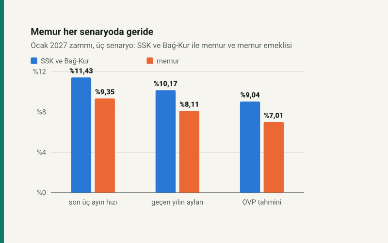

Kısa cevap
Memur ve memur emeklilerinin Ocak 2027 zammı iki parçalı: toplu sözleşmedeki %5,00 ile 2026'nın ikinci yarısına ait enflasyon farkı. Fark, Temmuz–Aralık enflasyonunun toplu sözleşmedeki %7,00'yi aşan kısmı.
Temmuz–Eylül'de %5,56 birikti. Farkın doğması için kalan üç ayda toplam %1,36 artış yetiyor; fark neredeyse kesin. Üç senaryoda memur zammı %7,01 ile %9,35 arasında; her senaryoda SSK ve Bağ-Kur zammının yaklaşık iki puan altında.
Zam nasıl hesaplanıyor?
Toplu sözleşme 2026'nın ikinci yarısı için %7,00, 2027'nin ilk yarısı için %5,00 artış öngörüyor. Altı aylık enflasyon %7,00'yi aşarsa aşan kısım Ocak'ta fark olarak eklenir:
- fark = (1 + Temmuz–Aralık enflasyonu) ÷ (1 + %7,00) − 1
- zam = (1 + fark) × (1 + %5,00) − 1
Örnek: Orta Vadeli Program'ın yıl sonu tahmini tutarsa altı aylık enflasyon %9,04 olur; fark %1,91, zam %7,01. Fark iki ondalıkla ilan edilir ve öyle uygulanır.
Fark neredeyse kesin
Temmuz–Eylül birikimi (%5,56) henüz %7,00'nin altında. Aradaki boşluk, kalan üç ayda toplam %1,36; ayda ortalama %0,45. Son üç ayın aylık ortalaması %1,82; bu hız sürerse eşik daha Ekim'de aşılır.
| Ay | Aylık | Birikim |
|---|---|---|
| Temmuz 2026 | %1,78 | %1,78 |
| Ağustos 2026 | %1,84 | %3,65 |
| Eylül 2026 | %1,84 | %5,56 |
Üç senaryo: memur ve emekli yan yana
| Senaryo | Temmuz–Aralık enflasyonu | Enflasyon farkı | Memur zammı | SSK ve Bağ-Kur zammı | Aradaki fark |
|---|---|---|---|---|---|
| Son üç ayın hızı sürerse | %11,43 | %4,14 | %9,35 | %11,43 | 2,08 puan |
| Geçen yılın aynı ayları | %10,17 | %2,96 | %8,11 | %10,17 | 2,06 puan |
| OVP tahmini tutarsa | %9,04 | %1,91 | %7,01 | %9,04 | 2,03 puan |
Neden hep geride? Memur zammı, aynı altı aylık enflasyonun (1 + %5,00) ÷ (1 + %7,00) = 0,9813 katı: toplu sözleşmenin Ocak oranı bir önceki yarının oranından iki puan düşük. Emekli zammında böyle bir indirim yok; o doğrudan altı aylık enflasyona eşit.
Kalan üç ay her ay aynı oranda artarsa
| Ekim–Aralık her ay | Memur zammı | SSK ve Bağ-Kur zammı |
|---|---|---|
| %1,00 | %6,72 | %8,76 |
| %1,50 | %8,32 | %10,38 |
| %2,00 | %9,92 | %12,02 |
| %2,50 | %11,55 | %13,68 |
Maaşınıza etkisi
Memur maaşı kadroya, dereceye ve ek göstergeye göre değişir; oran ise herkes için aynı. Örnek maaşlarla:
| Bugünkü maaş | Son üç ayın hızı sürerse | Geçen yılın aynı ayları | OVP tahmini tutarsa |
|---|---|---|---|
| 60.000 TL | 65.610 TL | 64.866 TL | 64.206 TL |
| 80.000 TL | 87.480 TL | 86.488 TL | 85.608 TL |
| 100.000 TL | 109.350 TL | 108.110 TL | 107.010 TL |
Aynı oran 4/c kapsamındaki memur emeklilerinin aylığına da uygulanır.
Ne zaman belli olacak?
TÜİK kalan ayları şu günlerde açıklayacak: Ekim 2026 verisi 3 Kasım 2026, Kasım 2026 verisi 3 Aralık 2026, Aralık 2026 verisi 4 Ocak 2027. Aralık verisiyle fark ve zam kesinleşir; sitedeki memur zammı aracı her açıklamanın ertesi günü kendiliğinden güncellenir.
Varsayımlar ve sınırlar
- Toplu sözleşme oranları (2026 ikinci yarı %7, 2027 ilk yarı %5) Kamu Görevlileri Hakem Kurulu kararından. Fark iki ondalıkla ilan edilir ve öyle uygulanır.
- Altı aylık enflasyon aylık oranların bileşiğidir; seri aylık oranları iki ondalıkla tutar.
- Maaş tutarları örnektir. Kadro, derece, ek gösterge, aile ve çocuk yardımı gibi kalemler maaşı değiştirir; oran herkes için aynıdır. Vergi dilimi değişimi net maaşı ayrıca etkiler.
- Senaryolar tahmin değildir; varsayımları tabloda yazılı.
Kaynaklar
- Kamu Görevlileri Hakem Kurulu Kararı, Resmî Gazete 27.8.2025/32561: 2026–2027 toplu sözleşme oranları ve enflasyon farkı
- Aylık TÜFE: TÜİK, TCMB Tüketici Fiyatları tablosu üzerinden; sitenin serisi her gece güncellenir
- Orta Vadeli Program (2027–2029), Strateji ve Bütçe Başkanlığı; Resmî Gazete 6 Eylül 2026: 2026 yıl sonu TÜFE tahmini %28,4
Sık sorulan sorular
Ocak 2027 memur zammı ne zaman belli olur?
Aralık 2026 TÜFE'sinin açıklandığı 4 Ocak 2027'de. Toplu sözleşmedeki %5 bellidir; enflasyon farkı o gün kesinleşir.
Memur emeklisi ne kadar zam alır?
Memurla aynı oranı. 4/c kapsamındaki emekliler SSK ve Bağ-Kur kuralına değil memur maaş artışına tabidir.
Enflasyon farkı nedir?
Temmuz–Aralık 2026 enflasyonunun toplu sözleşmedeki %7'yi aşan kısmı. Ocak'taki %5'in üstüne çarpılarak eklenir.